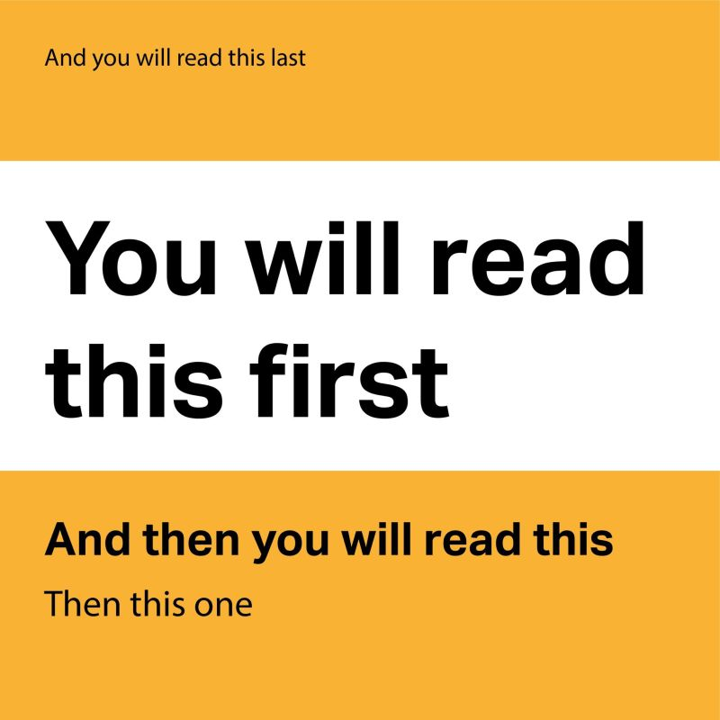

7. The Rhetoric of Attention on Instagram

Don’t overthink it. Which sentence did you read first?
Which text styles were used?
What about more subtle styles that may have been intended?
Is anything at all a coincidence?
Which sentence did you read first? Why? You probably didn’t consciously choose where to read. Rather, the design guided you almost seamlessly into reading according to the creator’s order. This is just one example of rhetoric.
This chapter explains how Instagram creators capture longer-term attention in the first few seconds, and how you can identify the different rhetorical methods.
There are three broad methods that creators use to make you interested in an Instagram post:
- Curiosity: How do you make someone stop scrolling?
- Visual Contrast: What makes you recognize one emotion over another?
- Hierarchy: How does the content guide you until the conclusion?
And that is an entire rhetorical journey.
- Identify rhetorical strategies that create curiosity.
- Identify visual contrasts for an effective opening.
- Evaluate the effectiveness of an Instagram post using hierarchy.
Identify rhetorical strategies that create curiosity.
Instagram is a highly engagement-driven platform, where most posts are optimized to generate as many views and clicks as possible. In many ways, the elements designed to stop your scroll represent a modern form of rhetoric.
Keeping an audience hooked for just the first few seconds is enough to sustain their engagement over a longer period. Successful posts don’t just rely on attractive images—they also use rhetorical choices that
encourage the audience to want more information.
A good example for this form of novelty is when a post challenges something the audience believes. People tend to pay short-term attention when what they see conflicts with what they expect. This creates the “knowledge gap,” and readers are curious to know why they were wrong—they don’t give out the answers right away.